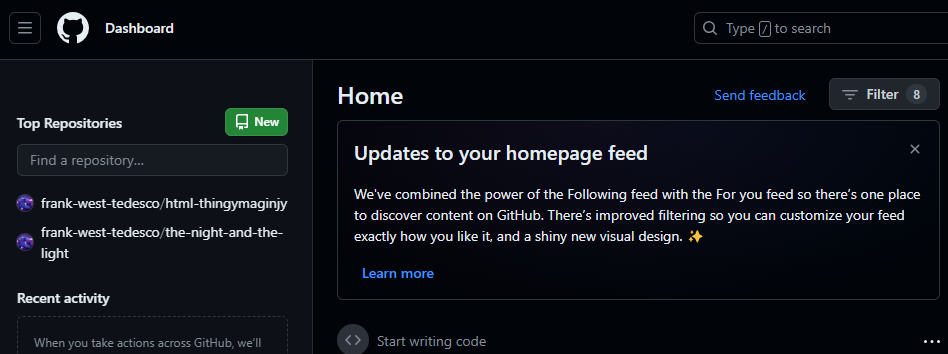
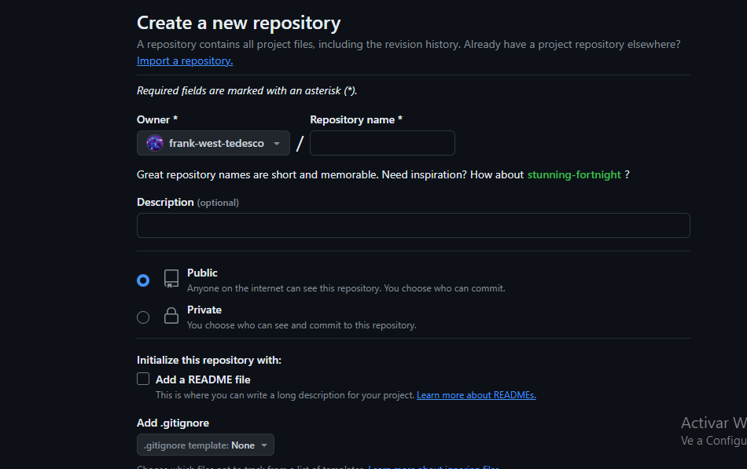
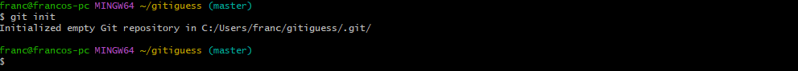
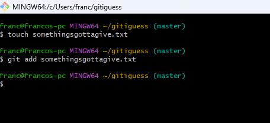
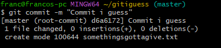
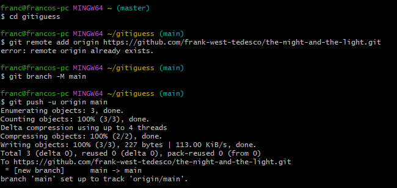
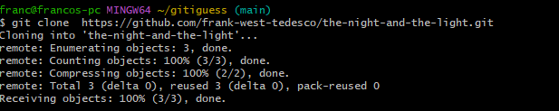
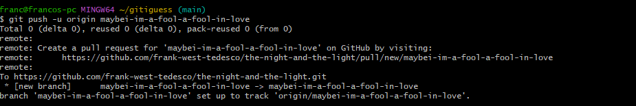
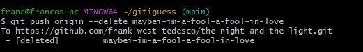

esto es git
git es una red social para programadores en la que se puede compartir codigo y demas pero tenemos que empezar por lo basico
si queremos trabajar con git debemos tener en cuenta que git y git hub son cosas muy distintas
git se puede iniciar de varias aplicaciones pero usaremos git bash
utilizando git bash podremos hacer las cosas normales de una consola/terminal pero
tambien podemos subir nuestros archivos dirigiendonos con el comando CD a la carpeta requerida para llegar al archivo, para luego seguir los siguientes pasos
tras crear una cuenta de github creamos un repositorio y le colocamos un nombre referido a lo que vayamos a subir
tras creado todo tenemos que escribir una serie de codigo como dije accediendo a la carpeta en cuestion para inicializar git y luego agregar el archivo a lo que seria en futuro un commit y enlazarlo con el repositorio creado
aqui se iniciliza git en la carpeta
aqui estariamos agregando un archivo .txt a todo esto y comprometiendolo con un commit
aqui ya estarian commiteados los archivos y abriamos logrado un cambio de rama
apartir de aqui se enlaza a github


esta ultima parte del codigo se enlazaria directamente con el repositorio en cuestion
ejemplo con este mismo archivo de la parte de git-bash